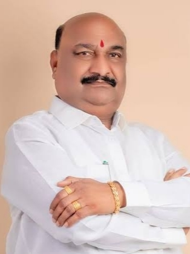

मा. श्री. राजू शेट्टी (अध्यक्ष, स्वाभिमानी शेतकरी संघटना)
स्वाभिमानी शेतकरी संघटनेची संभाजीनगर जिल्ह्यात, विशेषतः खुलताबाद तालुक्यात झालेली भक्कम वाढ ही कर्मयोगी
स्व. श्री. राजू आबा हारदे यांच्या अथक प्रयत्नांमुळे आणि दूरदृष्टीच्या नेतृत्वामुळे शक्य
झाली. तालुका अध्यक्ष म्हणून आबांनी आपले संपूर्ण आयुष्य शेतकऱ्यांच्या हक्कांसाठी व
समाजहितासाठी समर्पित केले.
आमच्या अनेक भेटींमध्ये आबा नेहमीच जिल्ह्यातील शेतकऱ्यांच्या समस्या मांडत आणि त्यावर ठोस उपाययोजना तसेच
सरकारविरोधात आंदोलनाचे मार्ग सुचवत असत. ते केवळ नेता नव्हते, तर खऱ्या अर्थाने समाजसेवक
होते. शेतकऱ्यांवरील त्यांचे प्रेम, प्रामाणिकपणा आणि आपुलकी यामुळे त्यांना शेतकऱ्यांचा प्रचंड आदर व स्नेह
लाभला.
ऊस, कापूस, मका यांसारख्या शेतमालाला योग्य दर मिळावा यासाठी आबांनी अनेक आंदोलनांचे नेतृत्व
केले. चक्का जाम, ऊस ट्रक रोखणे यांसारख्या ठोस कृतीतून त्यांनी शेतकऱ्यांना थेट लाभ मिळवून दिला. त्यांचे
धैर्य, निर्धार आणि न्यायासाठीची अढळ निष्ठा सर्वांसाठी प्रेरणादायी ठरली.
आज आबा आपल्यात नसले तरी त्यांच्या कार्याचा व संस्कारांचा ठसा स्वाभिमानी शेतकरी संघटनेत सदैव
जिवंत राहील. ते “स्वाभिमानी आबा” म्हणून कायम स्मरणात राहतील—समाजाचा आधारस्तंभ आणि समर्पण,
करुणा व प्रामाणिकपणाचे मूर्त रूप.
परिवर्तन महासक्ती आघाडीच्या कार्यक्रमात दरोडेखोरांशी झुंज देत पत्नीचे प्राण वाचवण्यासाठी दाखवलेल्या
अपूर्व शौर्यासाठी स्व. राजू आबा हारदे यांना मनःपूर्वक श्रद्धांजली अर्पण करण्यात आली. या
वेळी विविध पक्षांच्या प्रमुख नेत्यांनी आबांच्या पराक्रमाला आदरांजली वाहून त्यांच्या लढाऊ वृत्तीचे गौरवपूर्ण
स्मरण केले.
व्हिडिओ: आबांना परिवर्तन महासक्ती
श्रद्धांजली देतानाचा व्हिडिओ

मा. श्री. संदीपान भुमरे (खासदार, छ. संभाजीनगर)
राजू आबा हे अनेक वेळा माझ्याकडे शेतकऱ्यांच्या विविध समस्यांसाठी येत असत. विशेषतः
शेतमालाला योग्य बाजारभाव, शेतमालाच्या किमती वाढाव्यात आणि पिकांना हमीभाव
मिळावा याबाबत त्यांची भूमिका नेहमी ठाम आणि स्पष्ट होती. शेतकरी म्हणून ते आपल्या परिसरातील प्रश्न थेट मांडत
आणि उपायांवर चर्चा करत असत.
सन २०२१ मध्ये राज्यस्तरीय गव्हाच्या उत्पादनात प्रथम क्रमांक मिळाल्याबद्दल
राजू आबा हारदे यांना मानपत्र देण्याचा प्रसंग मला लाभला. हा सन्मान महाराष्ट्र राज्याचे
मंत्री मा. अतुल सावे आणि छत्रपती संभाजीनगरचे जिल्हाधिकारी यांच्या
उपस्थितीत प्रदान करण्यात आला. त्या वेळीही आबांनी शेतकऱ्यांच्या अडचणी, विशेषतः ग्रामीण रस्त्यांची
स्थिती आणि पिकांना हमीभाव यासंबंधी मुद्दे आमच्या निदर्शनास आणून दिले.
आबांच्या जीवनातील निस्वार्थीपणा आणि चिकाटी उल्लेखनीय होती. त्यांच्या दुःखद
निधनानंतर माझ्या त्या वेळच्या आरोग्यविषयक अडचणींमुळे मी प्रत्यक्ष भेट देऊ शकलो
नाही. मात्र, मी कुटुंबीयांशी फोनवरून संवाद साधून त्यांना सांत्वन दिले. हे प्रकरण
अत्यंत संवेदनशील असल्याने, पोलीस आयुक्तांना सखोल व निष्पक्ष तपास
करण्याच्या स्पष्ट सूचना देण्यात आल्या.
राजू आबा हे खऱ्या अर्थाने शेतकरी नेते होते. समाजकार्य आणि शेतकऱ्यांच्या हक्कांसाठी त्यांनी
सातत्याने आवाज उठवला. डकैतीच्या प्रसंगी पत्नीचे प्राण वाचवताना त्यांनी दाखवलेले धैर्य
विलक्षण होते. त्यांचा संघर्ष आणि कार्य सदैव स्मरणात राहील.
मी आणि आमचा पक्ष त्यांच्या कुटुंबाच्या पाठीशी कायम उभे राहू.

मा. श्री. अंबादास दानवे (विरोधी पक्षनेते, विधानपरिषद महाराष्ट्र राज्य)
राजू आबा हे माझ्याकडे अनेकदा शेतकऱ्यांच्या समस्यांसाठी येत असत. विशेषतः शेतमालाला बाजारभाव मिळावा,
शेतमालाच्या किमती वाढवाव्यात अशी त्यांची मागणी नेहमी ठाम असे. त्यांच्या सूचनांमुळे मला विधानपरिषदेत
शेतकऱ्यांचे मुद्दे प्रभावीपणे मांडता आले.
त्यांच्या जीवनातील निस्वार्थीपणा आणि जिद्द नेहमीच प्रेरणादायी होती. आबांच्या दुःखद निधनानंतर मी त्यांच्या
घरी जाऊन कुटुंबीयांची भेट घेतली, सांत्वन दिले आणि पोलीस आयुक्तांना या प्रकरणाचा कसून तपास करण्याचे निर्देश
दिले, कारण हा अत्यंत संवेदनशील, उच्चभ्रू आणि चर्चेचा विषय होता.
आबा हे खरेखुरे शेतकरी नेते होते — समाजकार्य आणि शेतकऱ्यांच्या हक्कासाठी झगडणारे, ज्यांनी आयुष्यभर
गरीब-शेतकऱ्यांचा आवाज बनण्याचे काम केले. अनेकांना दिलासा, मदत आणि प्रेरणा मिळवून दिली.
डकैतीच्या वेळी त्यांनी पत्नीचे प्राण वाचवताना दाखवलेले धैर्य अपूर्व होते; समाजहितासाठी आणि कुटुंबासाठी
त्यांनी दिलेले बलिदान विलक्षण आहे. त्यांच्या या कार्याची आणि पराक्रमाची आठवण कायम प्रेरणा देणारी राहील.
मी आणि आमचा पक्ष त्यांच्या कुटुंबाच्या नेहमी पाठीशी राहू. आबाचा आदर्श आणि संघर्ष आमच्यासाठी नेहमी दिशा
दाखवणारा राहील.
पोस्ट: पोस्ट पाहण्यासाठी येथे
क्लिक करा
मा. श्री. सतीश चव्हाण (आमदार, पदवीधर मतदारसंघ)
मी गंगापूर–खुलताबाद मतदारसंघात राजकीय आणि सामाजिक काम करत असताना एक नाव वारंवार ऐकू यायचे—राजू आबा
हारदे. शेतकऱ्यांच्या प्रश्नांसाठी ते नेहमी पुढे असत. पिकांना योग्य भाव मिळावा,
शेतकऱ्यांचे नुकसान होऊ नये यासाठी ते सातत्याने आवाज उठवत. स्वतःचा फायदा कधीच डोळ्यासमोर न ठेवता ते
जनतेसाठी काम करत होते.
गल्लेबोरगाव–पळसगाव रस्त्याचा प्रश्न त्या भागासाठी खूप महत्त्वाचा होता. आबांनी या कामासाठी
अनेक वेळा पाठपुरावा केला, आंदोलने केली आणि गरज पडली तेव्हा उपोषणाचाही मार्ग स्वीकारला. त्यांच्या बोलण्यात
आणि कामात प्रामाणिक तळमळ दिसत होती, त्यामुळे त्यांच्या मागणीकडे दुर्लक्ष करणे शक्य नव्हते.
आबांनी मला त्या रस्त्याबाबत थेट भेटून सांगितले. पावसाळा जवळ असल्याने लोकांना त्रास होऊ नये,
ही त्यांची खरी काळजी होती. पावसाळ्यापूर्वी तात्पुरती दुरुस्ती करण्यासाठी आबांच्या मागणीवरून शक्य ते
सहकार्य करण्यात आले, काही कामे तातडीने पूर्ण झाली आणि गावकऱ्यांना दिलासा मिळाला. यातून आबा केवळ
मागण्या करणारे नव्हते, तर जबाबदारीने विचार करणारे नेते असल्याचे दिसले.
सभा असो किंवा अधिकाऱ्यांची बैठक, आबा कधीही पुढे बसत नसत. आम्ही आग्रह केला तरी ते शेतकरी आणि सामान्य
लोकांमध्येच बसायचे. त्यांच्या या साधेपणामुळेच लोक त्यांच्याशी जोडले गेले होते. ते पदासाठी
नव्हे, तर लोकांसाठी काम करणारे शेतकरी नेते होते.
दुर्दैवाने त्यांच्या निधनानंतर मी त्यांच्या कुटुंबाची भेट घेतली आणि
त्यांना सांत्वन दिले. दरोड्याच्या वेळी पत्नीचे प्राण वाचवताना त्यांनी दाखवलेले धैर्य
हादरवून टाकणारे आहे. आपल्या प्राणांची पर्वा न करता त्यांनी कुटुंबाचे रक्षण केले.
राजू आबा हारदे यांचे काम आणि विचार कायम स्मरणात राहतील.
मा. श्री. प्रशांत बंब (आमदार, गंगापूर-खुलताबाद मतदारसंघ)
मला कर्मयोगी स्व. श्री. राजू आबा हारदे यांची ओळख खूप वर्षांपासून आहे. मी मागील पंधरा वर्षांपासून या
मतदारसंघाचा आमदार म्हणून कार्यरत आहे आणि त्या काळात मला आबांची कार्यशैली, विचार आणि समाजासाठीची निष्ठा जवळून
पाहायला मिळाली. ते अनेक वेळा माझ्या भेटीस येत असत — शेतकऱ्यांच्या अडचणी, गावातील समस्या, रस्त्यांच्या
कामांबाबत किंवा शासकीय योजनांच्या अंमलबजावणीसाठी नेहमीच आवाज उठवत असत.
आबांनी कधीच केवळ प्रसिद्धीसाठी किंवा राजकीय हेतूसाठी प्रश्न उपस्थित केले नाहीत. त्यांनी नेहमीच व्यवहार्य,
जनहिताचे आणि आवश्यक विषय मांडले. त्यामुळे मला त्यांच्या कामाची व त्यांच्यातील प्रामाणिकतेची नेहमीच आदरभावना
वाटली. त्यांनी मांडलेल्या अनेक मागण्यांवर मी स्वतः प्रयत्न करून उपाय केले आहेत. पण त्या कामाचे श्रेय त्यांनी
कधीच घेतले नाही; ते नेहमी “काम झाले हेच महत्त्वाचे” या भूमिकेत राहिले — हाच त्यांच्या समाजसेवेचा खरा आदर्श
होता.
राजू आबा हे प्रामाणिक, स्पष्टवक्ते आणि खऱ्या अर्थाने लोकसेवक होते. त्यांच्या अकाली निधनाची बातमी ऐकून मी
अत्यंत व्यथित झालो. त्यांच्या अंत्यसंस्काराला उपस्थित राहून त्यांच्या कुटुंबीयांना भेटलो आणि न्याय मिळवून
देण्यासाठी मी आश्वासन दिले. दरोड्याच्या वेळी त्यांनी दाखवलेले धैर्य आणि पत्नीला वाचविण्याचा केलेला प्रयत्न
अत्यंत शौर्यपूर्ण होता. दुर्दैवाने त्या संघर्षात त्यांचा मृत्यू झाला.
राजू आबा हे केवळ एक समाजसेवक नव्हते, तर जनतेच्या प्रश्नांसाठी लढणारा प्रखर आवाज होते. त्यांच्या कार्यामुळे
आणि त्यागामुळे ते सदैव सर्वांच्या स्मरणात राहतील. समाजाच्या उन्नतीसाठी त्यांचे योगदान अमूल्य आहे. अशा या
महान व्यक्तिमत्त्वाला माझी भावपूर्ण श्रद्धांजली.

मा. श्री. संजय खंबायते (जिल्हाध्यक्ष, भारतीय जनता पार्टी, छ. संभाजीनगर)
description for thought 5...

मा. श्री. हर्षवर्धन (दादा) जाधव (मा. आमदार, कन्नड-सोयगाव मतदारसंघ)
मी कन्नडचा आमदार असताना स्वर्गीय राजू आबा हारदे अनेक वेळा भेटत असत, विशेषतः कन्नड साखर कारखान्यातील ऊस
दरवाढीसाठी. शेतकऱ्यांच्या हितासाठी ते सातत्याने लढत आणि ऊस उत्पादकांना योग्य भाव मिळावा यासाठी आंदोलने करत
असत. मी विरोधी पक्षात असूनही त्यांच्या आंदोलनाला नेहमी नैतिक पाठिंबा दिला. ऊस ट्रकसाठी केलेले ‘रास्ता रोको’
आंदोलन हे शेतकऱ्यांच्या नुकसानीकडे लक्ष वेधण्यासाठीच होते.
या आंदोलनांत त्यांना अनेकदा अटक झाली, तरी त्यांनी कधीही भीती दाखवली नाही. “शेतकऱ्याला न्याय मिळाल्याशिवाय
मी थांबणार नाही,” हा त्यांचा निर्धार प्रेरणादायी होता. त्यांच्या धैर्य, जिद्द आणि आत्मविश्वासामुळे ते
सर्वांसाठी आदर्श बनले.
खासदारपदाच्या माझ्या निवडणुकीत त्यांनी स्वाभिमानी शेतकरी संघटनेतून सक्रिय पाठींबा दिला. त्यांच्यासोबत काम
करताना मला जाणवलं की ते केवळ संघटक नसून लोकहितासाठी झटणारे खरे समाजसेवक होते. त्यांनी पक्षीय राजकारणापेक्षा
समाजकारणाला अधिक प्राधान्य दिलं.
गाव, शेतकरी आणि समाजाच्या प्रश्नांसाठी त्यांनी अनेक अडचणींना सामोरे गेले, तरी कधीही मागे हटले नाहीत.
त्यांच्या निधनाने आपल्या भागातील प्रामाणिक आणि संघर्षशील नेतृत्व हरपले आहे, ज्याची उणीव आज प्रत्येक शेतकरी
आणि गावकरी अनुभवतो.
त्यांचे समाजासाठीचे योगदान, त्यांचा निर्धार आणि लढाऊ वृत्ती पुढील पिढ्यांसाठीही प्रेरणादायी ठरेल. अशा महान
समाजसेवकाला आणि शेतकऱ्यांच्या खऱ्या हितचिंतकाला माझी विनम्र श्रद्धांजली.

मा. श्री. रावसाहेब भागडे (कृषी आयुक्त, महाराष्ट्र राज्य)
description for thought 9...

मा. श्री. जगन्नाथ (बापू) खोसरे (मा. जिल्हा परिषद सदस्य)
कर्मयोगी स्व. श्री. राजू आबा हारदे यांच्याशी आमचे जुने आणि जिव्हाळ्याचे पारिवारिक संबंध
होते. स्वाभिमानी शेतकरी संघटनेसोबत काम करत असतानाच ते गल्लेबोरगावमधील आमच्या पॅनलचे सुरुवातीचे आणि
सक्रिय नेते होते. गल्लेबोरगाव ग्रामपंचायत आमच्या पॅनलच्या ताब्यात असताना गावात अनेक
विकासकामे झाली, त्यामध्ये आबांचा सहभाग आणि पाठिंबा नेहमीच महत्त्वाचा होता.
आबांच्या अनेक आंदोलनांमध्ये आणि उपोषणांमध्ये आम्ही त्यांच्या सोबत उभे राहिलो. ते नेहमी
गावकऱ्यांच्या आणि शेतकऱ्यांच्या हितासाठी काम करत. शेतकऱ्यांचे प्रश्न, अडचणी आणि हक्क यासाठी
ते सातत्याने प्रयत्न करत राहिले. आमच्या अनेक निवडणूक प्रचारातही आबांनी आमच्यासोबत सक्रिय
सहभाग घेतला. त्यांच्या मागे अनेक लोक ठामपणे उभे राहत असत.
राजकारणात त्यांचा सहभाग असला तरी त्यांचे मुख्य लक्ष समाजसेवा आणि शेतकरी हिताकडे होते.
कोणत्याही कामाच्या बदल्यात त्यांनी कधीही काही अपेक्षा ठेवली नाही. आबांच्या शेवटच्या काळात
रुग्णालयात आम्ही त्यांच्या सोबत होतो. त्यांच्या जाण्याने निर्माण झालेली पोकळी भरून न
निघणारी आहे.
आज त्यांच्या कुटुंबीयांकडून ‘आभार फाऊंडेशन’च्या माध्यमातून आबांचे कार्य पुढे नेण्याचा
प्रयत्न केला जात आहे, हा खरोखरच स्तुत्य उपक्रम आहे. दरोड्याच्या प्रसंगी पत्नीचे प्राण
वाचवताना त्यांनी स्वतःच्या प्राणांचीही पर्वा न करता दाखवलेले धैर्य सामान्य माणसाला शक्य
नाही. आबा कधीच सामान्य नव्हते.
कर्मयोगी म्हणजे असा माणूस जो आयुष्यभर कर्म करत राहतो आणि त्याच्या बदल्यात
काहीही मिळेल अशी अपेक्षा ठेवत नाही. योगी जसा शांतपणे आपले कर्तव्य करत राहतो, तसेच आबांनीही
निस्वार्थपणे आणि प्रामाणिकपणे काम केले. म्हणूनच लोक त्यांना प्रेमाने आणि आदराने
‘कर्मयोगी राजू आबा हारदे’ म्हणून ओळखतात.

मा. श्री. खंडागळे (जिल्हा परिषद सदस्य)
description for thought 8...
मा. श्री. विशाल खोसरे (सरपंच, गल्लेबोरगाव)
description for thought 9...